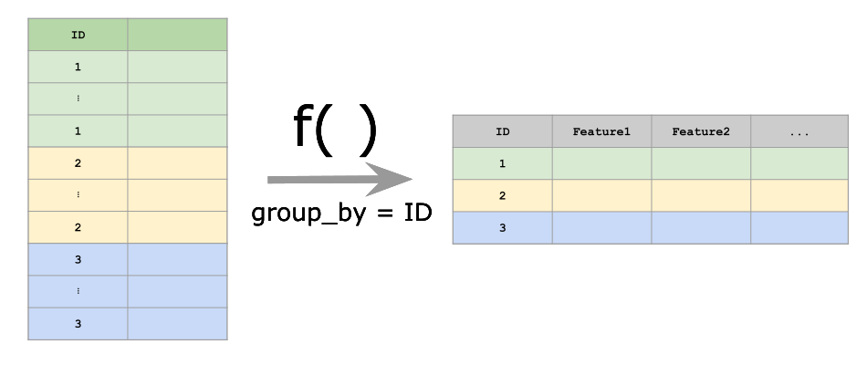

Given a user-defined function fun, calc_features calculates this function for each unique grouping variable (e.g. participants in a study). The function fun needs to be defined on the given dataset and is allowed to return a named vector of arbitrary length. The dataframe should contain a grouping variable with all the IDs:

Let’s simulate a simple (absolutely arbitrary!) example dataset. Two participants with the ID 1 or 2 were given two tasks. For each task they were given two hours of time. A value x was measured during this task.
library(fxtract)
df = data.frame(id = c(rep(1, 10), rep(2, 10)))
df$task = rep(c(rep("task1", 5), rep("task2", 5)), 2)
df$hour = rep(c(rep("hour1", 3), rep("hour2", 2), rep("hour1", 2), rep("hour2", 3)), 2)
df$x = rnorm(20)
df## id task hour x
## 1 1 task1 hour1 -0.57469921
## 2 1 task1 hour1 0.86688424
## 3 1 task1 hour1 0.28001677
## 4 1 task1 hour2 -0.10345984
## 5 1 task1 hour2 -0.20736672
## 6 1 task2 hour1 0.61673681
## 7 1 task2 hour1 0.03801292
## 8 1 task2 hour2 0.14532897
## 9 1 task2 hour2 -0.12916270
## 10 1 task2 hour2 0.82945348
## 11 2 task1 hour1 2.54374244
## 12 2 task1 hour1 0.81116466
## 13 2 task1 hour1 -0.34843089
## 14 2 task1 hour2 1.60672115
## 15 2 task1 hour2 0.61716299
## 16 2 task2 hour1 1.46140839
## 17 2 task2 hour1 -1.93056772
## 18 2 task2 hour2 -0.63562883
## 19 2 task2 hour2 1.84960024
## 20 2 task2 hour2 -1.16465000Let’s say we are interested in the maximum value of x for each participant. We need to define a function, which has a dataframe as input and a named vector as output:
Now we can calculate the desired outcome:
## id max_x
## 1 1 0.8668842
## 2 2 2.5437424Sometimes calculations can take a long time (e.g. clustering of GPS points) and we want to calculate more than one value (e.g. mean and sd). This can be achieved by returning a named vector:
more_features = function(data) {
c(max_x = max(data$x), sd_x = sd(data$x))
}
calc_feature(df, group_by = "id", fun = more_features)## id max_x sd_x
## 1 1 0.8668842 0.4727124
## 2 2 2.5437424 1.4507703## id max_x_task1 max_x_task2 sd_x_task1 sd_x_task2
## 1 1 0.8668842 0.8294535 0.5477724 0.4053961
## 2 2 2.5437424 1.8496002 1.0887065 1.6589913## id max_x_task1_hour1 max_x_task1_hour2 max_x_task2_hour1
## 1 1 0.8668842 -0.1034598 0.6167368
## 2 2 2.5437424 1.6067211 1.4614084
## max_x_task2_hour2 sd_x_task1_hour1 sd_x_task1_hour2 sd_x_task2_hour1
## 1 0.8294535 0.7249271 0.07347326 0.4092196
## 2 1.8496002 1.4555156 0.69972329 2.3984893
## sd_x_task2_hour2
## 1 0.4936795
## 2 1.6094477